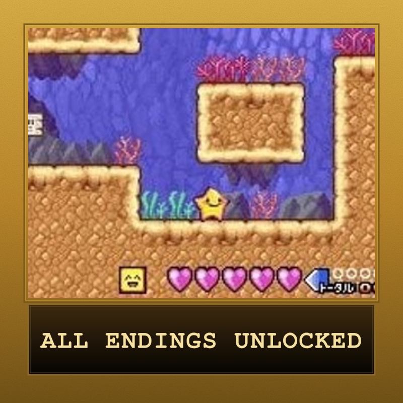
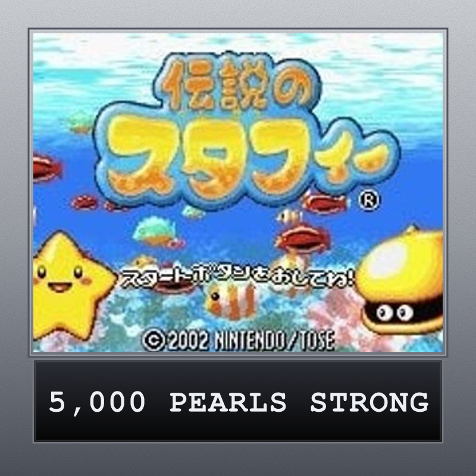
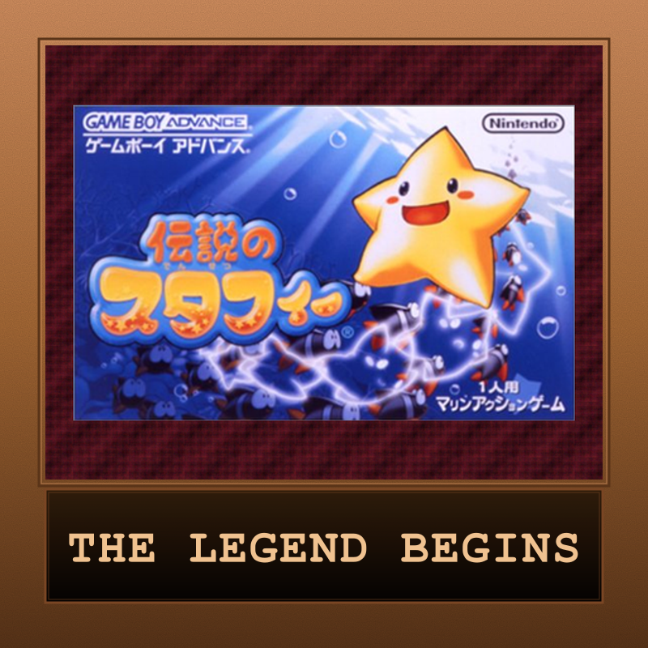

The Legendary Starfy
The Japan-only debut of Nintendo's clumsy little starfish prince. Knocked out of the cloud kingdom of Pufftop, Starfy bounces, glides, and Star Spins through the ocean with his cranky clam pal Moe — a breezy GBA platformer the West never got, now finally playable in English.
| Platform | Nintendo Game Boy Advance |
|---|---|
| Genre | 2D Platformer |
| Released | (Japan-only) |
| Developer | TOSE |
| Publisher | Nintendo |
| Available | Game Boy Advance (NTSC-J), Emulation |
How Long to Beat
Community estimate — no formal HLTB entry
Where to Play
About This Game
Densetsu no Stafy — "The Legendary Starfy" — is a 2002 Game Boy Advance platformer developed by TOSE and published by Nintendo, and the debut of one of Nintendo's lesser-known mascots. You play as Starfy, a clumsy starfish prince who tumbles out of the cloud kingdom of Pufftop into the ocean below. With his cranky clam sidekick Moe in tow, Starfy bounces, glides, and Star Spins through colorful undersea stages to set things right. After a long development that bounced from Game Boy to Game Boy Color before finally landing on GBA, it launched to a healthy reception in Japan and spawned a five-game series.
For decades it was a true import curiosity — the first four games never left Japan, and only the fifth entry reached the West (confusingly, under this same "The Legendary Starfy" name, on DS in 2009). That makes the GBA original a perfect Retro Game Club pick: a charming, breezy platformer most Western players never got to try. Thanks to a complete fan English translation released in 2023, it's finally fully playable in English for the first time.
Did You Know?
- Not actually a Kirby spin-off — Starfy is often mistaken for a Kirby project because of his round, peppy art style, but he began life in 1995 as an entirely original character concept at Nintendo and TOSE.
- A seven-year journey across three handhelds — the game was rebuilt from Game Boy to Game Boy Color (shown at a 2000 Nintendo event) before finally shipping on Game Boy Advance in September 2002.
- Only the sequel came West — the first four Starfy games stayed Japan-only; Densetsu no Stafy 4 was localized as "The Legendary Starfy" for Nintendo DS in 2009, which is why the GBA original is so easy to confuse with it.
- The Star Spin is the whole toolkit — Starfy's spin is his attack, his block-breaker, and his platforming move; it later upgrades to the Mighty and Ultra Star Spin, though you don't need the Ultra version to beat the game.
Critical Reception
The Legendary Starfy was a Japan-only release, so coverage below is from Japanese outlets and the import community.
Club Achievements

Star-Crossed Completionist
Gold
Deep-Sea Riches
Silver
Pufftop's Hero
BronzeOther Participants
No other participants yet.
Speedrun Records
The Legendary Starfy has an active speedrunning community on speedrun.com, with categories split across its three endings.
Records via the speedrun.com Densetsu no Stafy leaderboard.
Soundtrack
Composed by Yōko Matsutani and Morihiro Iwamoto
The Legendary Starfy's GBA score is bright and bouncy, all sunny undersea melodies and chiptune energy that match Pufftop's storybook tone — collected in-game in the 44-track 'Sea Jams' music gallery.
Notable Tracks
Individual track titles for the Japanese original aren't well documented — the full soundtrack can be browsed on VGMdb.
Sources & Attribution
- Game info and plot summary adapted from Wikipedia (Densetsu no Stafy)
- Series and character background from The Starfy Wiki
- Speedrun records via speedrun.com
- English fan translation via RomHacking.net
- Screenshots via Nintendo Life
- Soundtrack via VGMdb
- Box art via Wikipedia